6. 컨테이너 만들기¶
도커 없이 컨테이너 만들기¶
이제 지금까지 알아본 컨테이너 파일 시스템, 네임 스페이스를 활용한 컨테이너 격리, Cgroup을 활용한 컨테이너 자원을 종합해서 도커 없이 컨테이너를 만들어보겠습니다.
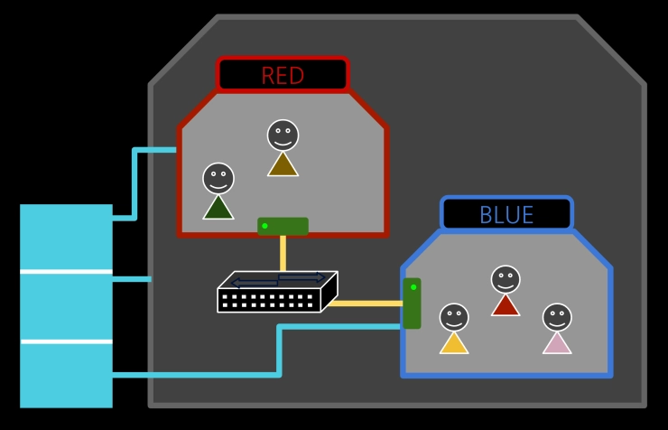
이미지 준비¶
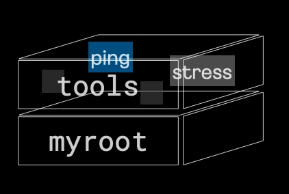
root@ubuntu1804:/tmp/myroot# tree -L 2
.
├── bin
│ ├── ls
| ├── rm
│ ├── mkdir
│ ├── mount
│ ├── ps
│ └── sh
├── lib
│ └── x86_64-linux-gnu
├── lib64
│ └── ld-linux-x86-64.so.2
├── proc
│ ├── 1
│ ├── 10
│ ├── 105
컨테이너 파일 시스템에서 준비한 myroot를 그대로 사용하고, 그 위에 tools 이미지를 아래와 같이 만들어주겠습니다.
- ping: 컨테이너 통신 테스트
- stress: 컨테이너 부하 테스트
- hostname: 호스트네임 변경
- umount: put_old 제거
wget https://raw.githubusercontent.com/sam0kim/container-internal/refs/heads/main/scripts/copy_tools.sh;
bash copy_tools.sh;
root@ubuntu1804:/tmp# tree -L 1
.
├── chroot_ps.sh
├── myroot
└── tools
이제 바로 컨테이너 파일 시스템을 만들고 싶지만, 호스트에 영향이 없이 컨테이너만의 파일 시스템을 구성하려면 별도의 마운트 네임스페이스가 필요합니다.
마운트 네임스페이스 뿐만 아니라 네트워크, Cgroup 등 설정을 함께 해준 뒤 파일 시스템을 구성해보겠습니다.
컨테이너 네트워크 구성하기¶
네트워크 네임스페이스 RED, BLUE를 생성해줍니다.
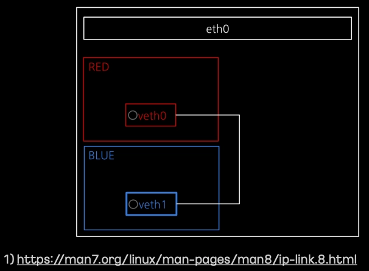
RED/BLUE 네트워크 네임스페이스에 각각 가상 인터페이스(veth0/veth1)를 추가하고, 이를 veth pair로 연결해줍니다.
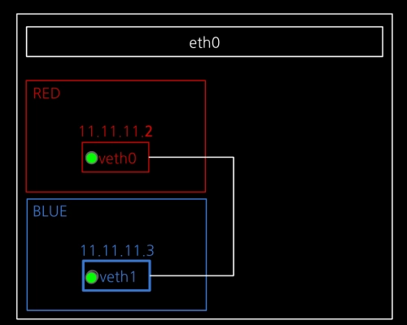
ip netns exec RED ip addr add dev veth0 11.11.11.2/24
ip netns exec RED ip link set veth0 up;
ip netns exec BLUE ip addr add dev veth1 11.11.11.3/24;
ip netns exec BLUE ip link set veth1 up;
각 인터페이스에 IP를 할당하고, 인터페이스를 활성화해줍니다.
컨테이너 Cgroup 및 네임스페이스 설정하기¶
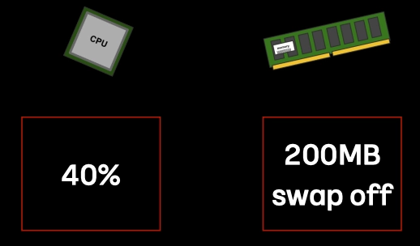
mkdir /sys/fs/cgroup/cpu/red;
mkdir /sys/fs/cgroup/memory/red;
echo 4000 > /sys/fs/cgroup/cpu/red/cpu.cfs_quota_us;
echo 209715200 > /sys/fs/cgroup/memory/red/memory.limit_in_bytes;
echo 0 > /sys/fs/cgroup/memory/red/memory.swappiness;
mkdir /sys/fs/cgroup/cpu/blue;
mkdir /sys/fs/cgroup/memory/blue;
echo 40000 > /sys/fs/cgroup/cpu/blue/cpu.cfs_quota_us;
echo 209715200 > /sys/fs/cgroup/memory/blue/memory.limit_in_bytes;
echo 0 > /sys/fs/cgroup/memory/blue/memory.swappiness;
red, blue라는 이름으로 cgroup을 각각 만들어준 뒤 RED는 CPU 4%, 메모리 200MB(swap off)로 설정하고, BLUE는 CPU 40%, 메모리는 200MB(swap off)로 설정해줍니다.
unshare -m -u -i -fp nsenter --net=/var/run/netns/RED /bin/sh;
echo "1" > /sys/fs/cgroup/cpu/red/cgroup.procs;
echo "1" > /sys/fs/cgroup/memory/red/cgroup.procs;
unshare -m -u -i -fp nsenter --net=/var/run/netns/BLUE /bin/sh;
echo "1" > /sys/fs/cgroup/cpu/blue/cgroup.procs;
echo "1" > /sys/fs/cgroup/memory/blue/cgroup.procs;
이제 새로운 마운트, UTS, IPC, PID, NET 네임스페이스를 만들어 /bin/sh 프로세스를 실행해줍니다. 이로써 컨테이너를 위한 기본적인 틀이 완성되었습니다.
마지막으로 cgroup 적용을 위해 PID 1번 프로세스를 각각의 생성했던 red, blue 그룹에 넣어주면 이제 컨테이너 안에 모든 프로세스는 해당 그룹에 속하게 됩니다.
파일 시스템 구성하기¶
RED 컨테이너 파일 시스템¶
이제 RED 컨테이너 안에서 작업을 진행해보겠습니다.
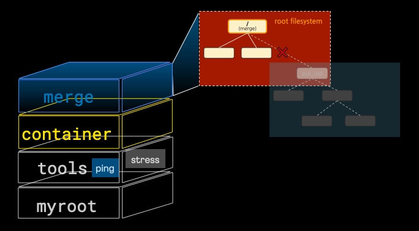
RED 컨테이너 용 오버레이 파일 시스템 구성하고 마운트하기 위해 아래와 같이 폴더를 구성해보겠습니다.
위에서 준비한 이미지(myroot, tools)를 변경 불가능한 lowerdir로 설정하고, 변경 가능한 upperdir로 방금 만들어준 /redfs/container를 설정하고 최종 병합 뷰를 /redfs/merge로 설정해주겠습니다.
mount -t overlay overlay -o lowerdir=/tmp/tools:/tmp/myroot,upperdir=/redfs/container,workdir=/redfs/work /redfs/merge
최종 마운트 된 RED 컨테이너 파일 시스템은 아래와 같습니다.
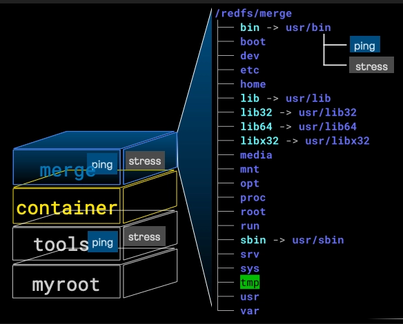
이제 pivot_root를 통해 기존 root는 신규 root 아래로 옮기고 umount 해주겠습니다. 새로 마운트 네임스페이스가 만들어졌기 때문에 호스트에 영향이 가지 않습니다.
mkdir -p /redfs/merge/put_old
cd /redfs/merge;
pivot_root . put_old;
cd /;
mount -t proc proc /proc;
umount -l put_old;
rm -rf put_old;
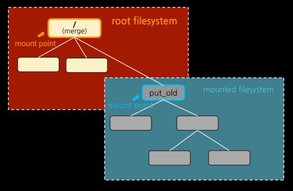
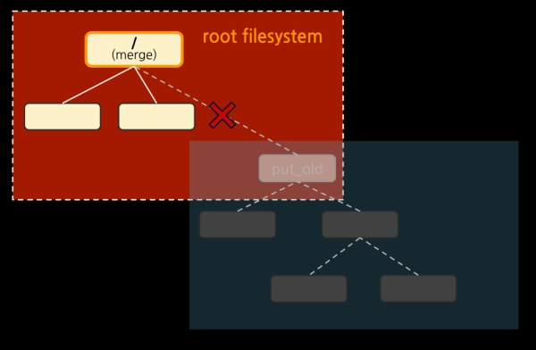
이제 RED의 호스트 네임을 설정해주고
프로세스까지 확인해보면 PID 네임스페이스도 독립적으로 잘 생성되었음을 확인할 수 있습니다.
# ps -ef
UID PID PPID C STIME TTY TIME CMD
0 1 0 0 12:51 ? 00:00:00 /bin/sh
0 13 1 0 12:52 ? 00:00:00 ps -ef
BLUE 컨테이너 파일 시스템¶
이제 BLUE 컨테이너 안에서 동일한 작업을 진행해보겠습니다.
방법은 동일하기 때문에 설명은 생략합니다.
mount -t overlay overlay -o lowerdir=/tmp/tools:/tmp/myroot,upperdir=/bluefs/container,workdir=/bluefs/work /bluefs/merge
mkdir -p /bluefs/merge/put_old
cd /bluefs/merge;
pivot_root . put_old
cd /
mount -t proc proc /proc;
umount -l put_old;
rm -rf put_old;
# ps -ef
UID PID PPID C STIME TTY TIME CMD
0 1 0 0 13:01 ? 00:00:00 /bin/sh
0 12 1 0 13:03 ? 00:00:00 ps -ef
컨테이너 테스트¶
이제 RED/BLUE 컨테이너가 모두 준비되었습니다.
통신 테스트부터 진행해보겠습니다.
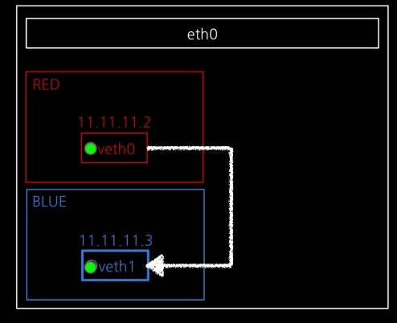
# ping 11.11.11.3
PING 11.11.11.3 (11.11.11.3) 56(84) bytes of data.
64 bytes from 11.11.11.3: icmp_seq=1 ttl=64 time=0.432 ms
64 bytes from 11.11.11.3: icmp_seq=2 ttl=64 time=0.042 ms
64 bytes from 11.11.11.3: icmp_seq=3 ttl=64 time=0.043 ms
64 bytes from 11.11.11.3: icmp_seq=4 ttl=64 time=0.042 ms
64 bytes from 11.11.11.3: icmp_seq=5 ttl=64 time=0.043 ms
^C
--- 11.11.11.3 ping statistics ---
5 packets transmitted, 5 received, 0% packet loss, time 4101ms
rtt min/avg/max/mdev = 0.042/0.120/0.432/0.156 ms
패킷 손실없이 정상적으로 패킷이 전달됨을 확인할 수 있습니다.
이제 stress 테스트를 진행해보겠습니다.
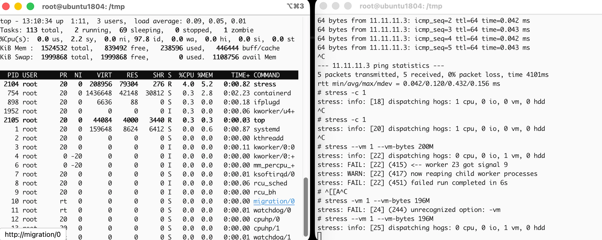
RED의 경우 CPU를 최대 사용해도 전체 4%만 사용하는 것을 알 수 있고, 메모리는 --vm-bytes 200M으로 설정하면 프로세스 실행 중 실패하고, 근접한 197M 정도로 하면 전체 메모리의 5.2% 정도 사용하는 것을 확인할 수 있습니다.
마치며¶
지금까지 도커 없이 컨테이너를 만드는 과정에 대해 알아보았습니다. 이를 통해 도커와 같은 기술이 실제로는 리눅스 커널의 어떤 요소를 활용하는 지 자세히 알아볼 수 있었습니다.
도커는 단지 인터페이스일 뿐이며, 실제 우리가 사용하는 컨테이너는 리눅스 커널의 네임스페이스, 오버레이 파일 시스템, Cgroup을 통해 구성됩니다.
앞으로 더 봐야할 것들은 아래와 같습니다.
- 컨테이너 네트워크 (가상 네트워크 통신)
- 컨테이너 표준화 (인터페이스)
- 컨테이너 오케스트레이션 (쿠버네티스)